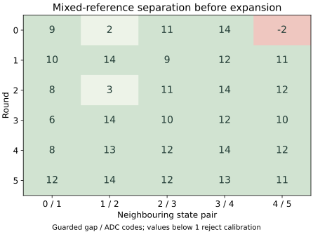

Question and rationale
The balanced boundary return recognized all 504 unperturbed medians. Of 144 one-code probes, 36 were rejected and none received a wrong identity. Rejections occurred in every round despite balancing both perturbation directions within each round. Forty-one accepted probe medians lay exactly on a boundary.
This investigation asks whether reference measurements that include the intended perturbations can support wider useful acceptance without losing state separation. Two procedures use the same one-third-gap rule: the baseline uses nominal references; the candidate uses a separate block containing nominal and perturbed references. Both are frozen before the same held-out trials. No interval is fitted to those trials.
The comparison can establish whether the candidate procedure improves recognition in this boot. Candidate references occur later, so reference composition and reference age are not isolated causal effects. Both calibration counters and decision ages are retained. A successful result would justify a further recurrence or order-controlled comparison, rather than establish a general error rate.
Method
One planned boot contains six rounds of 648 readings, 3888 in total. Each round has the following three blocks. Numerical quantities on this page use decimal notation unless stated otherwise.
- Nominal references · 216 readings. Acquire 36 readings per state, grouped into twelve three-reading medians, to establish the baseline.
- Mixed references · 216 readings. Acquire 36 readings per state: four medians at each nominal offset −1, 0 and +1, to establish the candidate.
- Held-out trials · 216 readings. Perform eighteen twelve-reading trials to evaluate both frozen calibrations and retain trigger-omission controls.
The six nominal control requests remain 90, 93, 96, 99, 102 and 105. At state 0, redirect a negative offset inward to +1; at state 5, redirect a positive offset inward to −1. Each outer state therefore has four nominal and eight inward reference medians per round. All requests remain within 90–105. A control-code increment is not an independently calibrated voltage increment.
Retain zero added acquisition wait, 1000 microseconds of pre-ADC settling, guard 2, bounded transactions, operating checks, control readbacks and restoration. Zero added wait still includes settling, transport and instruction overhead. The reference and trial allocations change; the total number of readings remains fixed.
Calibration and separation
Apply the existing one-third-gap rule independently to each reference block. For each state, take the minimum and maximum of its twelve reference medians and apply guard 2. Require ordered, separated intervals. For each adjacent pair, divide the count of unassigned integer codes by three, round down, and extend each facing interval by that amount. Outer limits use the nearest adjacent allowance and remain bounded by the ADC domain.
An invalid or overlapping calibration makes that procedure unavailable for the round. Preserve the raw references, rejected calibration and all scheduled validation outcomes. The rule does not split an overlap, assign an identity from the requested state, or expand its limits during validation.
The candidate calibration is created only after all 216 mixed-reference readings succeed. Recognition receives the measured median and frozen intervals; the requested state is used only by the independent assessment to score the returned identity. Held-out values never enter either reference set.
Held-out requests and controls
Each trial comprises four consecutive three-reading stages:
- Prime A: request nominal A and trigger acquisition.
- Omit at B: request nominal B and omit the conversion trigger.
- Trigger B: trigger acquisition at nominal B.
- Probe B: trigger acquisition at B with the selected −1, 0 or +1 code offset.
Across six rounds, every ordered A/B pair occurs three times and receives each nominal offset once. There are 108 trials: 90 changed-state transitions and 18 self-transitions. Each stage supplies 108 medians. Effective probe offsets are balanced over the boot: 36 negative, 36 zero and 36 positive. The outer-state redirection applies to references and probes alike.
All six identities are evaluated against the same frozen set of separated intervals. This supplies neighbouring-state observations, but does not measure every intervening analog value or outward perturbations at the outer states.
Exact deterministic schedule
Let r be round 0–5 and p be state-group position 0–5. Nominal reference state is (p + r) modulo 6. Mixed reference state is (p + r + 3) modulo 6; its triple k = 0–11 has nominal offset ((k + r) modulo 3) − 1.
For held-out trials, B = (p + r + 3) modulo 6. Within each B group, t = 0–2 gives A = t + 3(r modulo 2), and probe offset ((t + r) modulo 3) − 1. Redirect outer offsets as stated above. Each round contains three probes per B, one at each nominal offset. This prescribed order is not randomized.
Assessment fixed before acquisition
Require matching preparation identity, unchanged boot payload, a complete valid journal, the declared request sequence, successful operating checks and restorations. Reconstruct both calibrations and every native decision from raw readings. Verify ordered ADC observations, whole-call intervals and the separate candidate completion counters.
- Trigger provenance: all 108 omitted triples retain the immediately preceding last raw A result; all 90 changed-state trials update numerically at the first triggered B read. Keep 18 self-transitions separate. Require agreeing result pairs and the declared 0 → 1 → 0 triggered and 0 → 0 → 0 omitted status signatures.
- Nominal recognition: all 108 prime-A, 108 triggered-B and 36 zero-offset candidate probe medians are correct: 252 unperturbed outcomes.
- Boundary robustness: all 36 candidate probe medians at each effective offset are correct. Any wrong, rejected or unavailable probe prevents this criterion from passing.
The combined criterion requires diagnostic integrity and all three results. All six candidate calibrations must therefore be usable. Keep missing outcomes in the scheduled denominators; a failed calibration does not remove its trials. Omitted-trigger identities remain controls and cannot qualify fresh B acquisition.
For the paired comparison, report correct, wrong, rejected and unavailable counts for both procedures on the same 324 triggered held-out medians: 252 unperturbed and 72 perturbed. Descriptive improvement requires more correct outcomes, fewer rejected plus unavailable outcomes, and no additional wrong assignments. Improvement and complete recognition are separate conclusions.
Tabulate each probe by state, effective offset and round, alongside its immediately preceding nominal B result and both calibration ages. Report candidate signed margins and the paired outcome changes. The mixed-reference block is calibration input; its intermediate legacy diagnostic classifications are excluded from all held-out criteria.
Implementation and recording
The new SEIGRASM operation contains 168 authored literal AArch64 instruction words. It schedules the three blocks, delegates acquisition to the existing timed operation, collects mixed references, invokes the unchanged gap-calibration instructions, and records candidate decisions on held-out triples. PC tools place those instruction bytes in the image and assess returned evidence. No target compiler or external assembler produces this operation.
Configuration schema 14 identifies this sequence. The 64-word acquisition rows retain their existing diagnostic fields. Within each round, ordinals 0–215 identify nominal references, 216–431 mixed references, and 432–647 held-out readings. The legacy phase value distinguishes only the first block from subsequent acquisition; schema and ordinal establish the precise role.
The existing timing bracket ends before candidate calibration or recognition begins. Candidate records retain their own completion counters, checked against that bracket end and the next acquisition start. Whole-call durations therefore cover the existing acquisition and nominal-reference processing, while total acquisition duration also includes the new candidate work. The candidate counters are read in program order without the ISB brackets used for acquisition endpoints; they do not supply a separately ordered candidate execution duration.
Section 3 retains the preceding 72384-word layout, followed by six 48-word candidate calibrations and 432 eight-word decisions, for 76128 words. A calibration records bounds, status, availability, completion counter, centres, reference minima and maxima. Each decision records status, identity, availability, median, completion counter, calibration counter, round and a reserved zero. The independent reader checks these records against the raw references and triples.
A complete return occupies 32525 of the 32704 reserved journal sectors, leaving 179 unchanged empty reservations. This adds 374 written sectors to the preceding experiment. The native senary record format, storage operations and 64 MiB image geometry remain unchanged.
Execution checks cover the full 3888-row schedule, independent reference collection, frozen decisions, deliberately wrong and rejected outcomes, invalid overlapping calibration, failed references, and partial evidence recovery through the placed boot image. Supplied device responses establish software behavior only.
Preparation
Preparation 1641DB640784 was installed on the selected SD, with the complete 64 MiB image verified by readback. Its SHA-256 is 6f146a7471158a7d26b0534981f3be01450ebe0e55ea6f9227dac3d4e591b439. The single planned boot has returned; its results follow below.
All 276 software checks passed with no skips and unchanged sources during validation. The preparation preserves 105 source files. Comparison with the preceding image confirms 33 unchanged instruction regions; the new reference operation replaces the prior challenge dispatch. Acquisition context, evidence extent, configuration, identity and sample binding change accordingly. Boot configuration is unchanged.
The preceding SD contents match the preserved balanced return before replacement. The preparation retains the image, source hashes, validation report, installation readback and this declared protocol.
Run duration
Use the established SD procedure with one uninterrupted 26-minute powered session. The preceding complete return reached final-section entry after 23 minutes 23 seconds. The new journal is 374 sectors longer; the existing window retains a completion allowance. This timing estimate is not a measurement of the new run.
Returned results
All 3888 readings and 32525 journal records were recovered. The candidate procedure did not meet the declared improvement or complete-recognition criteria. Its first mixed-reference calibration was rejected because guarded state-4 and state-5 intervals overlapped. Recognition was therefore unavailable for that round; acquisition and recording continued.
| Outcome | Nominal references | Mixed references |
|---|---|---|
| Correct | 306 | 270 |
| Wrong identity | 0 | 0 |
| Rejected value | 18 | 0 |
| Unavailable | 0 | 54 |
All five accepted candidate calibrations recognized their 270 triggered medians correctly. This resolved 16 baseline rejections. However, the failed first calibration made 52 baseline-correct and two baseline-rejected outcomes unavailable. These 54 outcomes remain in the denominator: the five-round subset does not qualify the whole boot.
Nominal recognition was 252/252 for the baseline and 210/252 for the candidate, with 42 unavailable. Perturbed recognition was 54/72 for the baseline, with 18 rejected, and 60/72 for the candidate, with 12 unavailable. Neither procedure assigned a wrong triggered identity. Retention/update controls and diagnostic integrity passed.
Correct triggered medians by round
| Round | Nominal references | Mixed references |
|---|---|---|
| 0 | 52/54 | 0/54 |
| 1 | 51/54 | 54/54 |
| 2 | 50/54 | 54/54 |
| 3 | 53/54 | 54/54 |
| 4 | 52/54 | 54/54 |
| 5 | 48/54 | 54/54 |
Reference separation and the failed calibration
In round 0, state 4 reference medians ranged from 3000 to 3048; state 5 medians ranged from 3051 to 3079. Their measured median ranges remained separated by two unassigned codes. Guard 2 produced intervals 2998–3050 and 3049–3081, overlapping at 3049 and 3050. The unchanged rule rejected the complete calibration before gap expansion.
The limiting state-4 median, 3048 at request 103, came from readings 285–287: 3036, 3048 and 3056. The limiting state-5 median, 3051 at request 104, came from readings 315–317: 3051, 3039 and 3057. These are measured reference triples; removing them or reducing the guard after return would change the declared assessment.

The state-4/5 guarded gap was 10–12 codes in rounds 1–5. Other pairs also approached the limit: state 1/2 had guarded gaps of 2 and 3 in rounds 0 and 2. After expansion, round 2 retained only one unassigned code between those accepted intervals. Positive separation in the other rounds does not make the first calibration dispensable.
Held-out perturbations
At effective offsets −1, 0 and +1, the baseline recognized 28/36, 36/36 and 26/36 probe medians. The candidate recognized 30/36 at each offset, with six unavailable in each condition. Where the candidate calibration was accepted, all 90 probe medians were correct; their signed margins ranged from 4 to 27 ADC codes, with none exactly on a boundary.
The candidate accepted the intended perturbations in those five rounds while retaining non-overlapping intervals. That observation supports further investigation of the procedure, but its all-round availability was worse. Reference composition and later acquisition remain confounded; observed improvement in the accepted subset cannot isolate either cause.
Correct probe medians by state and effective offset
| State / offset | Nominal references | Mixed references |
|---|---|---|
| 0 / +0 | 6/6 | 5/6 |
| 0 / +1 | 7/12 | 10/12 |
| 1 / -1 | 5/6 | 5/6 |
| 1 / +0 | 6/6 | 5/6 |
| 1 / +1 | 6/6 | 5/6 |
| 2 / -1 | 5/6 | 5/6 |
| 2 / +0 | 6/6 | 5/6 |
| 2 / +1 | 2/6 | 5/6 |
| 3 / -1 | 5/6 | 5/6 |
| 3 / +0 | 6/6 | 5/6 |
| 3 / +1 | 6/6 | 5/6 |
| 4 / -1 | 5/6 | 5/6 |
| 4 / +0 | 6/6 | 5/6 |
| 4 / +1 | 5/6 | 5/6 |
| 5 / -1 | 8/12 | 10/12 |
| 5 / +0 | 6/6 | 5/6 |
Retention and trigger observations
All 108 omitted-trigger triples retained the immediately preceding last raw A value. All 90 changed-state trials differed numerically from A on the first triggered B reading; the 18 self-transitions remain separate. All declared triggered and omitted status signatures, agreeing result pairs and control readbacks were recovered.
The candidate recognized the retained A identity in all 90 omitted triples with an accepted calibration. The remaining 18 were unavailable in round 0. Recognition still describes a measured or retained value; it does not by itself associate that value with the newly requested B state or independently identify a physical conversion.
Timing and completion
All 3888 ordered whole-call intervals and 27216 internal ADC counter observations passed the declared ordering checks. The 7776 endpoint frequency observations all report 54000000 Hz. Whole-call duration had a median of 34.922157 ms, with a range of 33.096889–39.042611 ms.
Acquisition lasted 138.135683 nominal seconds; the ordered first-start to last-end span was 138.127192 seconds. Recorded decision ages span 7.917342–15.451036 seconds for the nominal-reference calibration and 0.108752–7.635055 seconds for the mixed-reference calibration. These ages use the candidate decision's counter for both references.
Final-section entry occurred 1418.609094 nominal seconds after trial entry, about 23 minutes 39 seconds. The complete journal was recovered. Its final target readback is not established by that recovery, and these counter observations do not measure the external powered duration.
Interpretation and next investigation
Mixed references can support useful perturbation coverage when their guarded intervals remain separated: all 270 triggered medians in accepted rounds were correct, including 16 rejected by the nominal-reference procedure. The first-round overlap nevertheless made the candidate worse overall. The procedure is not qualified as a replacement for the baseline.
The limiting observation has shifted from a held-out rejection to insufficient separation in the reference set. The first-round state-4/5 failure and narrow state-1/2 gaps make neighbouring perturbed requests the next relevant comparison. Early occurrence alone does not establish a thermal, settling or acquisition-order cause.
A proposed next investigation is to acquire opposing perturbations of neighbouring states in interleaved, reversed orders, early and later in the same boot. Retain guard 2, zero added wait, explicit trigger provenance and held-out validation. This would test whether narrow separation recurs when the neighbouring references are closer in time and their order is counterbalanced. It would not discard the first round, shrink the guard or widen this return's acceptance intervals.
Independent analog conversion freshness, voltage accuracy, counter uncertainty and exclusion of other device activity remain unresolved. Existing EEPROM entry and initial hardware state remain apparatus dependencies. This return establishes execution of the independent reference procedure through SEIGRASM and its measured recognition limits; Hyphos-defined operation and Seigsit creation remain further capabilities to establish.
Acquisition integrity
Two read-only SD acquisitions agree by SHA-256: e228c6d09772b460e1d7662ee882234291b7d32b589f8326a9499d5ddab6305f. Preparation identity matches, both boot files are unchanged, and all 32525 journal records are valid and consecutive. The 179 unused reservations remain unchanged. All six block restorations completed, and final restoration and pin release report success.
Seven sectors outside the journal differ from preparation; their writer and timing remain unidentified. No deviations were reported, and external durations were not separately measured. The frozen protocol, executable preparation, raw return, assessment sources and artifact hashes are preserved.